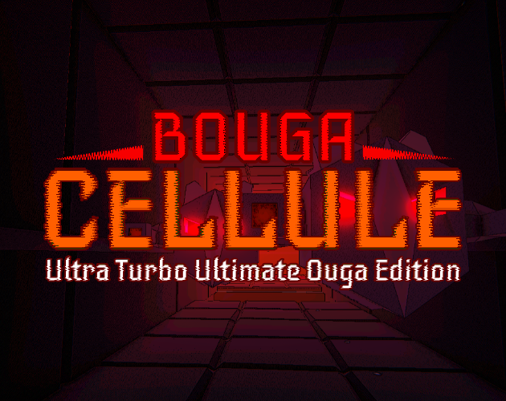
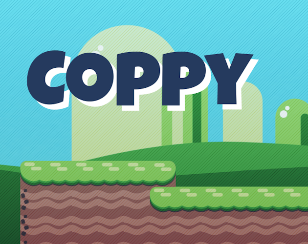
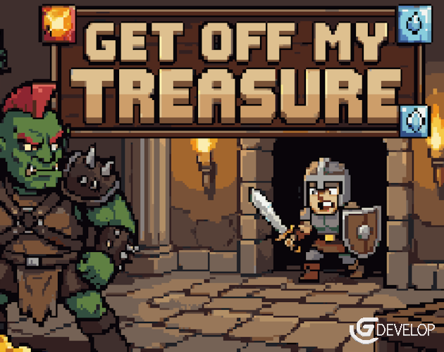
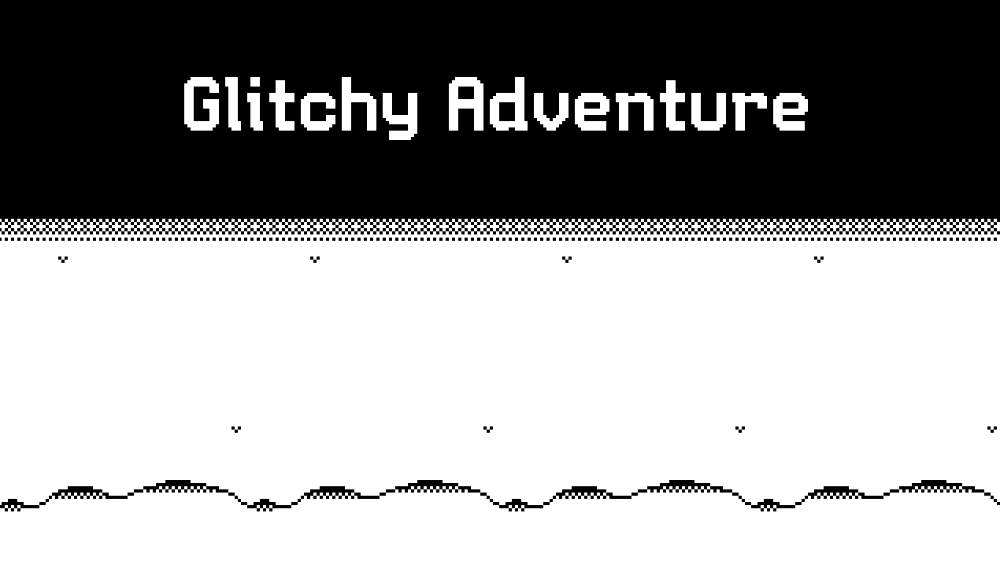
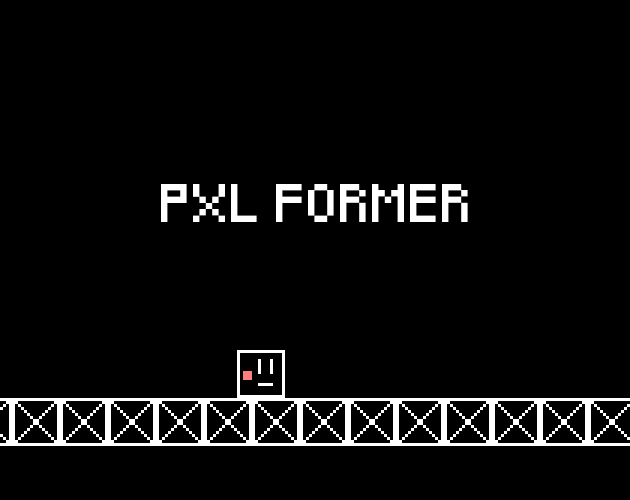
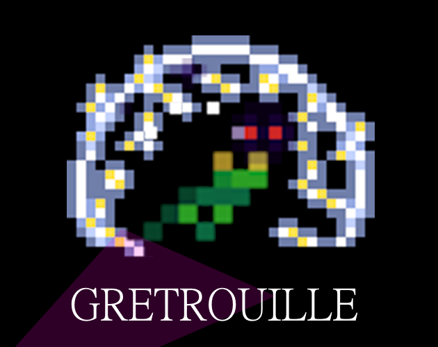
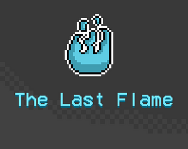

dev indépendant · zéro business plan · max kiff
FougereBle
Je fais des jeux vidéo. Pas pour payer le loyer. Juste parce que plus c’est loufoque, WTF et complètement débile, plus je m’éclate à les coder.

À la une · Dev & Play Jam 2026
Bouga Cellule
Ultra Turbo Ultimate Ouga Edition
Le dernier né. Maintenant disponible, et le nom est déjà trop long. Parfaitement dans le thème.
Jouerle catalogue (on va pas se mentir, c’est court)
Les jeux
-
Bouga Cellule
ZBaudo a encore une fois trouvé un plan diabolique pour détruire le monde. Mais cette fois-ci, sont plan est sérieux et pourrait bien fonctionner contre toute attente.
Jouer -

Coppy
Fan-game de Bobby, le jeu d’Anawan. Un platformer Godot, avec un mode speedrun parce que pourquoi pas.
Jouer -

Get Off My Treasure
Tu contrôles pas le héros. Tu es le donjon. Cartes maléfiques, monstres, pièges : le but c’est qu’il ramène pas ton trésor.
Jouer -

Glitchy Adventure
Mini Jam 211, 48h, zéro couleur (l’encre colorée coûte trop cher). Platformer puzzle, fantôme, téléport. Un peu glitchy, comme le nom.
Jouer -

PXL Former
Mini platformer minimaliste, perso cubique, ça glisse comme sur de la glace. C’est volontaire. (Oui, vraiment.)
Jouer -

Gretrouille
Mini Jam, 24h, marais de nuit. Ta lampe anti-grenouilles te sauve l’âme… jusqu’à ce que la batterie meure. Ou que la foudre te grille. Ou les deux.
Jouer -

pas un studio. un type avec un clavier.
À propos
Je suis un dev indépendant, mais pas le genre « je vis de mes jeux ». Je vis de les faire. Les jams (Mini Jam, Dev & Play, ce qui passe) c’est l’excuse parfaite pour pondre un truc absurde en 24h ou 48h et appeler ça un jeu.
Godot, libGDX, GDevelop, Unity… j’attrape l’outil qui va avec l’idée du moment. L’idée, souvent, c’est une blague qui a trop grandi.
Si tu cherches un portfolio clean de game designer en recherche d’emploi : mauvais onglet. Si tu veux des prototypes HTML5 un peu tordus à lancer dans le navigateur : bienvenue.